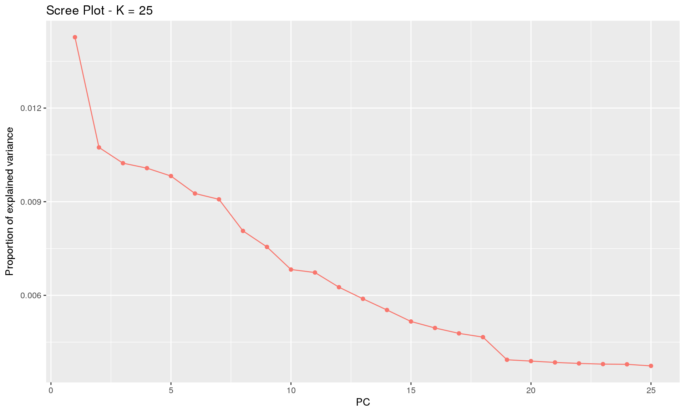
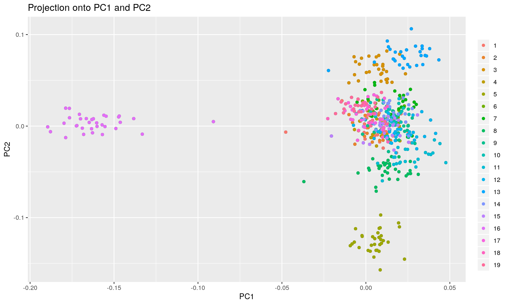
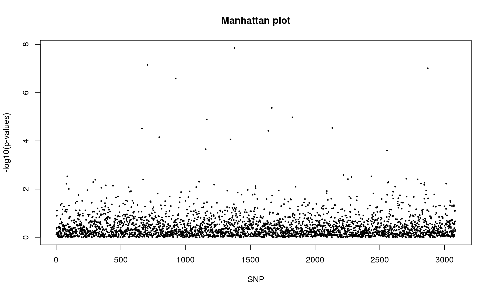
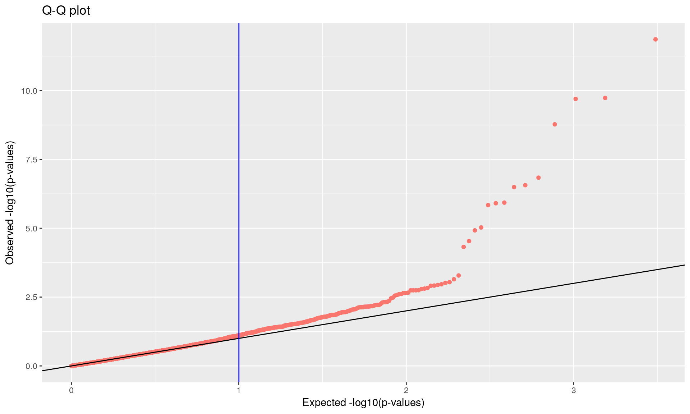
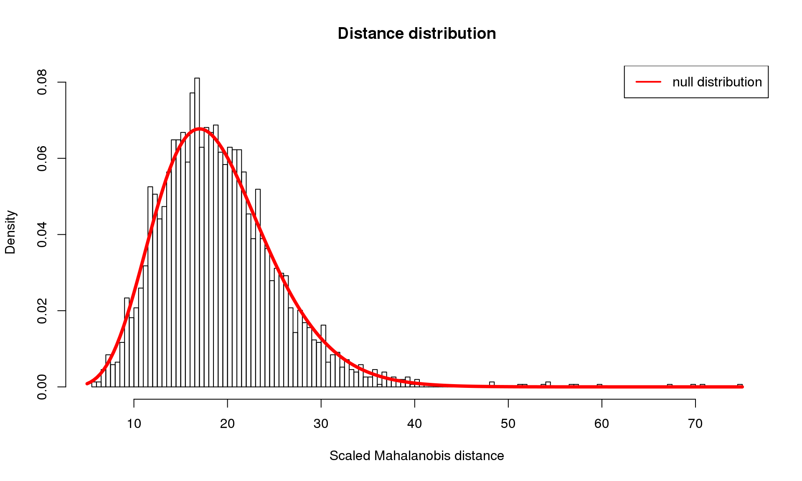
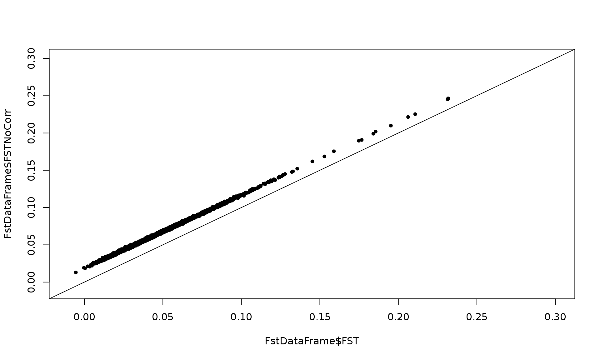
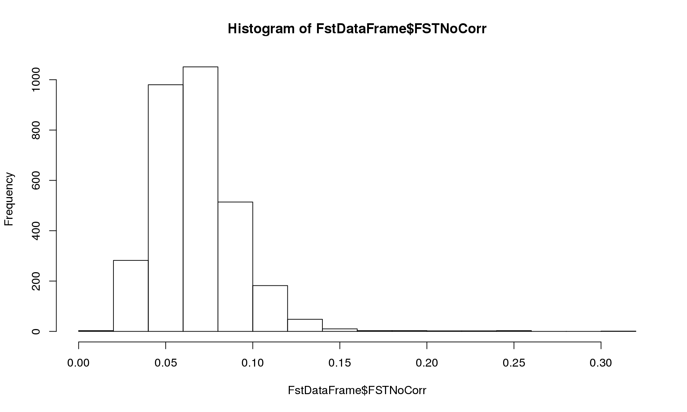
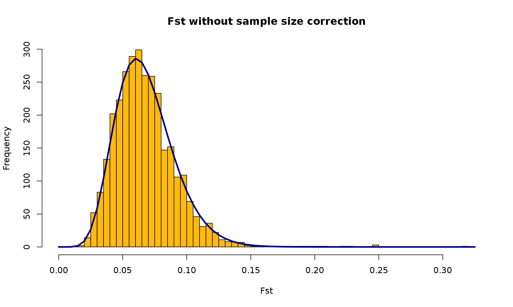

Detection of the signal of selection from genome scan. Population based analysis
Introduction
The purpose of the vignette is to detect outlier SNP loci from a large number of SNPs genotyped for a large number of individuals. Individuals are organised in well defined populations. Then, we tested if allele counts in outlier loci are correlated to the temperature. We will first use a method based on principal component analysis (PCAdapt) (section 2) and a second method based on atypical values of Fst (OutFLANK; Whitlok and Lotterhos (2015); https://github.com/whitlock/OutFLANK) (section 3) to detect outliers loci. Then, we will test if the allele counts in outliers are correlated to the temperature using a Poisson regression (section 4).
Assumptions
- We assume that loci are neutral and we are looking for those are deviant from the neutral assumption.
- We assume that loci correlated to the environment (temperature) are under selection.
Data
We will use simulated data provided by Katie Lotterhos (Lotterhos et al. in prep). The initial data set is constituted of 509 individuals, 19 populations and 3084 SNP. It has 2 extra-columns: Population and Temperature measures. SNP are in columns: each row contains one value at each SNP locus (separated by spaces or tabulations) corresponding to the number of reference alleles: 0 means zero copies of the reference allele, 1 means one copy of the reference allele (i.e. heterozygote), and 2 means two copies of the reference allele.
Resources/Packages required
- PCAdapt: http://membres-timc.imag.fr/Michael.Blum/PCAdapt.html
- OutFLANK: https://github.com/whitlock/OutFLANK
Since OutFLANK is not yet on CRAN, you will need to install it from GitHub using the devtools R package. Additionally, OutFLANK depends on qvalue from Bioconductor, which must be installed beforehand.
install.packages("devtools")
library("devtools")
source("https://bioconductor.org/biocLite.R")
biocLite("qvalue")
install_github("whitlock/OutFLANK")Loading the required packages:
library("pcadapt")
library("qvalue")
library("OutFLANK")
library("ggplot2")Section 1: Load the data
sel <- read.table("SNPselection1.txt", head = TRUE)
dim(sel)## [1] 509 3086Section 2: PCAdapt
To run the function pcadapt(), the user should specify the number K of principal components (PC) to work with: first perform with a large number of principal components (e.g. higher than the number of populations), then use the ‘scree plot’ to chose the value of K. It displays the percentage of variance that is explained by each PC. The recommended value of K corresponds to the largest value of K before the plateau of ‘scree plot’ is reached. Then for a given SNP, a statistical test to define the SNP as outlier or not is based on the “loadings” that are defined as the correlation between the SNP and the PCs. The statistic test for detecting outlier SNPs is the Mahalanobis distance (between the K correlations of the SNP and each axis and mean correlations) and, which scaled by a constant, should have a chi-square distribution with K degrees of freedom under the assumption that there are no outlier. By default P-values of SNPs with a minor allele frequency smaller than 0.05 are not computed. A Manhattan plot displays log10 of the p-values. It is also possible to check the distribution of the p-values using a Q-Q plot. The authors suggest to use false discovery rate (q-value) to provide a list of outliers.
genotype <- sel[, 3:ncol(sel)]
dim(genotype)## [1] 509 3084K <- 25
x <- pcadapt(data = genotype, K = K)
plot(x, option = "screeplot") # 19 groups seems to be the correct value
plot(x, option = "scores", pop = sel[, 1]) # how populations are shared among the 19 groups
K <- 19
x <- pcadapt(data = genotype, K = K, min.maf = 0)
summary(x) # numerical quantities obtained after performing a PCA## Length Class Mode
## stat 3084 -none- numeric
## pvalues 3084 -none- numeric
## maf 3084 -none- numeric
## gif 1 -none- numeric
## chi2.stat 3084 -none- numeric
## scores 9671 -none- numeric
## loadings 58596 -none- numeric
## singular_values 19 -none- numeric
## zscores 58596 -none- numericplot(x, option = "manhattan")
plot(x, option = "qqplot", threshold = 0.1)
plot(x, option = "stat.distribution") # Distribution of Mahalanobis distances.
qval <- qvalue(x$pvalues)$qvalues
alpha <- 0.1
outliers_pcadapt <- which(qval < alpha)
print(outliers_pcadapt)## [1] 663 706 796 923 1155 1163 1347 1378 1639 1666 1825 2133 2556 2871length(outliers_pcadapt) # 14 outliers## [1] 14alpha <- 0.05 # use of a more stringent threshold to detect outliers
outliers <- which(qval < alpha)
print(outliers)## [1] 663 706 796 923 1155 1163 1347 1378 1639 1666 1825 2133 2556 2871length(outliers) # 14 outliers## [1] 14section 3: OutFLANK (https://github.com/whitlock/OutFLANK)
A procedure to find Fst outliers based on an inferred distribution of neutral Fst: it uses likelihood on a trimmed distribution of Fst values to infer the distribution of Fst for neutral markers. This distribution is used to assign q-values to each locus to detect outliers loci potentially due to spatially heterogeneous selection. In practice, first the function MakeDiploidFSTMat() allows to calculate the appropriate input data frame among other parameters, Fst for each locus, and Fst without sampling size correction (FSTNoCorr). Then the function OutFLANK() estimate q-values and provides a list of outliers.
pop <- data.frame(sel[, 1])
ind <- paste("pop", pop[, 1]) #vector with the name of population
locinames <-
as.character(seq(1:ncol(genotype))) #vector with the name of loci
FstDataFrame <- MakeDiploidFSTMat(genotype, locinames, ind)## Calculating FSTs, may take a few minutes...plot(FstDataFrame$FST, FstDataFrame$FSTNoCorr, xlim = c(-0.01,0.3),
ylim = c(-0.01, 0.3), pch = 20)
abline(0, 1) # Checking the effect of sample size on Fst since FSTCoCorr will be used in the follow
hist(FstDataFrame$FSTNoCorr) 
OF <- OutFLANK(FstDataFrame, NumberOfSamples=19, qthreshold = 0.05,
RightTrimFraction = 0.05)
# Plot the ditribution of Fst with the chi squared distribution
OutFLANKResultsPlotter(OF, withOutliers = TRUE, NoCorr = TRUE, Hmin = 0.1,
binwidth = 0.005, Zoom = FALSE, RightZoomFraction = 0.05,
titletext = NULL)
outliers_OF <- OF$results$LocusName[OF$results$OutlierFlag == TRUE]
print(outliers_OF)## [1] 663 706 923 1163 1378 1639 1666 1825 2133 2556 2871
## 3084 Levels: 1 10 100 1000 1001 1002 1003 1004 1005 1006 1007 1008 ... 999length(outliers_OF) # 11 outliers## [1] 11Section 4: Logistic regression : linking outliers and temperature
We aim to test if the outliers detected with PCAdapt and OutFLANK (663 706 923 1163 1378 1639 1666 1825 2133 2556 2871) are correlated to the temperature. We use a GLM with a binomial error to model the probability to have the allele “A” out of the two alleles. We derive the relation for some of the shared outliers. You can do the test for all.
# We keep the outliers loci selected by both pcadapt and outflank
outliers <- outliers_pcadapt[outliers_pcadapt %in% outliers_OF]
length(outliers) # 11 outliers## [1] 11loc1 <- genotype[, outliers[1]]
temp <- sel$Temperature
loc1temp <- data.frame(loc1, temp)
mod <- glm(cbind(loc1, 2 - loc1) ~ temp, family = binomial)
summary(mod) # This loci is significantly correlated to temperature##
## Call:
## glm(formula = cbind(loc1, 2 - loc1) ~ temp, family = binomial)
##
## Deviance Residuals:
## Min 1Q Median 3Q Max
## -2.43957 -1.10354 0.09418 1.03271 2.62515
##
## Coefficients:
## Estimate Std. Error z value Pr(>|z|)
## (Intercept) -0.02085 0.06770 -0.308 0.758
## temp 0.27603 0.02603 10.606 <2e-16 ***
## ---
## Signif. codes: 0 '***' 0.001 '**' 0.01 '*' 0.05 '.' 0.1 ' ' 1
##
## (Dispersion parameter for binomial family taken to be 1)
##
## Null deviance: 869.59 on 508 degrees of freedom
## Residual deviance: 738.61 on 507 degrees of freedom
## AIC: 1011.6
##
## Number of Fisher Scoring iterations: 3loc2 <- genotype[, outliers[2]]
loc2temp <- data.frame(loc2, temp)
ggplot(loc2temp, aes(x = factor(loc2), y = temp)) +
geom_boxplot() +
xlab("Major allele count") +
ylab("Temperature (Centigrade)")
mod <- glm(cbind(loc2, 2 - loc2) ~ temp, family = binomial)
summary(mod) # This loci is significantly correlated to temperature##
## Call:
## glm(formula = cbind(loc2, 2 - loc2) ~ temp, family = binomial)
##
## Deviance Residuals:
## Min 1Q Median 3Q Max
## -2.19071 -1.25625 0.06401 1.21800 2.20092
##
## Coefficients:
## Estimate Std. Error z value Pr(>|z|)
## (Intercept) -0.02568 0.06552 -0.392 0.695
## temp 0.19104 0.02411 7.923 2.32e-15 ***
## ---
## Signif. codes: 0 '***' 0.001 '**' 0.01 '*' 0.05 '.' 0.1 ' ' 1
##
## (Dispersion parameter for binomial family taken to be 1)
##
## Null deviance: 837.64 on 508 degrees of freedom
## Residual deviance: 769.88 on 507 degrees of freedom
## AIC: 1059.5
##
## Number of Fisher Scoring iterations: 3# Test with a loci that is only selected by one method
loc7 <- genotype[, outliers_pcadapt[!outliers_pcadapt %in% outliers_OF][1]]
loc7temp <- data.frame(loc7, temp)
ggplot(loc2temp, aes(x = factor(loc7), y = temp)) +
geom_boxplot() +
xlab("Major allele count") +
ylab("Temperature (Centigrade)")
mod <- glm(cbind(loc7, 2 - loc7) ~ temp, family = binomial)
summary(mod) ## This loci is not significantly correlated to temperature##
## Call:
## glm(formula = cbind(loc7, 2 - loc7) ~ temp, family = binomial)
##
## Deviance Residuals:
## Min 1Q Median 3Q Max
## -1.84798 -1.59313 -0.06144 1.53467 1.73831
##
## Coefficients:
## Estimate Std. Error z value Pr(>|z|)
## (Intercept) 0.06980 0.06346 1.100 0.271
## temp -0.04202 0.02243 -1.874 0.061 .
## ---
## Signif. codes: 0 '***' 0.001 '**' 0.01 '*' 0.05 '.' 0.1 ' ' 1
##
## (Dispersion parameter for binomial family taken to be 1)
##
## Null deviance: 802.15 on 508 degrees of freedom
## Residual deviance: 798.62 on 507 degrees of freedom
## AIC: 1106.2
##
## Number of Fisher Scoring iterations: 3Conclusions
- PCAdapt detected 14 outliers
- OutFLANK detected 11 outliers
- 11 outliers were detected in common
- Those common outliers are all significantly correlated with the temperatures as shown by Poisson regressions. Such outliers can be potentially involved in local adaptation due to temperatures. However more analysis are necessary to confirm that they are outliers, and which allele is potentially under selection.
What’s next
Information on further analysis that could be done as LFFM (package LEA..).
Contributors
- Stephanie Manel (EPHE) (Author)
- Alicia Dalongeville (CEFE) (Author)
- Zhian Kamvar (reviewer)
References
Duforet-Frebourg N, K Luu, G Laval, E Bazin, MGB Blum. (2016) Detecting genomic signatures of natural selection with principal component analysis: application to the 1000 Genomes data. Molecular Biology and Evolution (http://arxiv.org/abs/1504.04543)
Whitlock MC, Lotterhos KE (2015) Reliable Detection of Loci Responsible for Local Adaptation: Inference of a Null Model through Trimming the Distribution of Fst. The American Naturalist 186, S24-S36. http://www.jstor.org/stable/10.1086/682949
Session Information
This shows us useful information for reproducibility. Of particular importance are the versions of R and the packages used to create this workflow. It is considered good practice to record this information with every analysis.
options(width = 100)
devtools::session_info()## Session info ---------------------------------------------------------------------------------------## setting value
## version R version 3.2.3 (2015-12-10)
## system x86_64, linux-gnu
## ui X11
## language (EN)
## collate en_US.UTF-8
## tz Zulu
## date 2016-03-09## Packages -------------------------------------------------------------------------------------------## package * version date source
## cluster 2.0.3 2015-07-21 CRAN (R 3.2.1)
## colorspace 1.2-6 2015-03-11 CRAN (R 3.2.3)
## DEoptimR 1.0-4 2015-10-23 CRAN (R 3.2.3)
## devtools 1.10.0 2016-01-23 CRAN (R 3.2.3)
## digest 0.6.9 2016-01-08 CRAN (R 3.2.3)
## evaluate 0.8.3 2016-03-05 CRAN (R 3.2.3)
## fit.models * 0.5-10 2013-02-23 CRAN (R 3.2.3)
## formatR 1.3 2016-03-05 CRAN (R 3.2.3)
## ggplot2 * 2.1.0 2016-03-01 CRAN (R 3.2.3)
## gtable 0.2.0 2016-02-26 CRAN (R 3.2.3)
## htmltools 0.3 2015-12-29 CRAN (R 3.2.3)
## knitr 1.12.3 2016-01-22 CRAN (R 3.2.3)
## labeling 0.3 2014-08-23 CRAN (R 3.2.3)
## lattice * 0.20-33 2015-07-14 CRAN (R 3.2.3)
## magrittr 1.5 2014-11-22 CRAN (R 3.2.3)
## MASS * 7.3-45 2015-11-10 CRAN (R 3.2.3)
## memoise 1.0.0 2016-01-29 CRAN (R 3.2.3)
## munsell 0.4.3 2016-02-13 CRAN (R 3.2.3)
## mvtnorm 1.0-5 2016-02-02 CRAN (R 3.2.3)
## OutFLANK * 0.1 2016-03-09 Github (whitlock/OutFLANK@1379c26)
## pcadapt * 2.2 2016-02-13 CRAN (R 3.2.3)
## pcaPP 1.9-60 2014-10-22 CRAN (R 3.2.3)
## plyr 1.8.3 2015-06-12 CRAN (R 3.2.3)
## qvalue * 2.2.2 2016-03-09 Bioconductor
## Rcpp 0.12.3 2016-01-10 CRAN (R 3.2.3)
## reshape2 1.4.1 2014-12-06 CRAN (R 3.2.3)
## rmarkdown 0.9.5 2016-02-22 CRAN (R 3.2.3)
## robust * 0.4-16 2014-05-18 CRAN (R 3.2.3)
## robustbase * 0.92-5 2015-07-22 CRAN (R 3.2.3)
## rrcov * 1.3-11 2016-02-15 CRAN (R 3.2.3)
## scales 0.4.0 2016-02-26 CRAN (R 3.2.3)
## stringi 1.0-1 2015-10-22 CRAN (R 3.2.3)
## stringr 1.0.0 2015-04-30 CRAN (R 3.2.3)
## yaml 2.1.13 2014-06-12 CRAN (R 3.2.3)